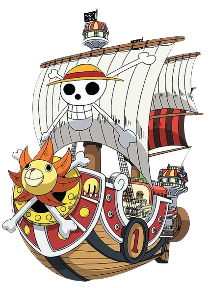

One Piece
Luffy, um jovem cujo corpo ganhou as propriedades de borracha
após ter comido uma fruta do diabo acidentalmente.
Com sua tripulação, os Piratas do Chapéu de Palha,
Luffy explora a Grand Line em busca do tesouro mais procurado do mundo,
o "One Piece", a fim de se tornar o próximo Rei dos Piratas.
Estúdio de animação: Toei Animation
Emissoras de televisão: BR Cartoon.
Episódios: 1034 - em lançamento
Período de exibição: 20 de outubro de 1999 – atual.
